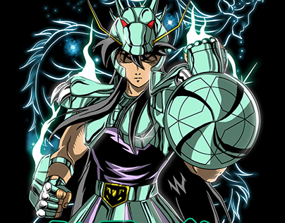
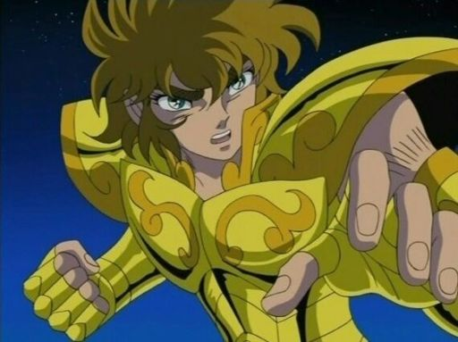
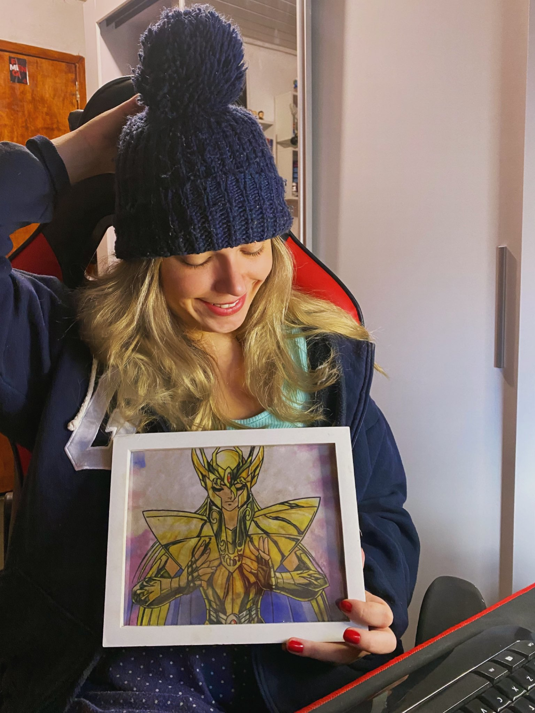
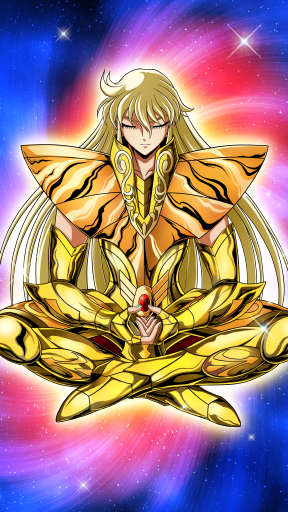
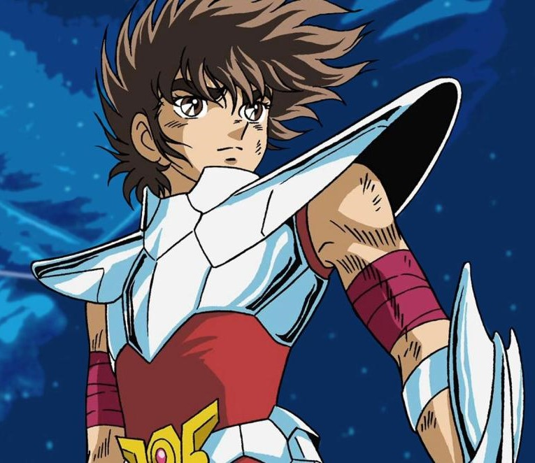

19 anos, ariano e Residente em Tic/Software no Serratec.
O personagem favorito de Kaique é Shiryu, um Cavaleiro de Bronze da Constelação de Dragão.
Shiryu foi enviado à China para treinar com o Mestre Ancião nos "Cinco Picos Antigos" e se tornar um
Cavaleiro de Atena. Se apresenta sempre uma postura calma e madura, bem como forte senso de dever para
com a missão e seus companheiros
não hesitando em fazer grandes sacrifícios por eles ou Atena.
Apesar de ser ariano, Kaique possui muitas das principais características de Shiryu.
=

André Tauk
35 anos, leonino e Residente em Tic/Software no Serratec.
Seu Cavaleiro de Ouro preferido é Aiolia de Leão a Alma de Ouro.
Apesar de sua personalidade explosiva, Aiolia tem um coração puro que distingue rapidamente os justos, por
isso foi um dos primeiros Cavaleiros de Ouro a reconhecer a autoridade de Atena e assim,
se tornar o guardião da quinta casa do Santuário de Atena.
Mesmo não acreditando em astrologia, por ironia, André é um leonino nato que lembra muito o próprio
Aiolia.
=

Maria Eduarda Ribeiro
27 anos, capricorniana e Residente em Tic/Software no Serratec.
Seu Cavaleiro de Ouro preferido é Shaka de Virgem, mais conhecido como o maior de todos na obra criada por
Masami Kurumada.
Shaka é considerado a reencarnação de Buda por possuir um poder de observação que permite conhecer a verdade
escondida sob as aparências.
É o Cavaleiro que possui o maior cosmo entre os Cavaleiros de Atena, recebendo o título de “O Homem Mais
Próximo de Deus”, que abrange tanto o seu grau de luminosidade quanto esse poder considerado o mais
aproximado ao dos deuses.
Não preciamos dizer quem escreveu esse texto parcial!
 =

Gustavo Pereira
18 anos, virginiano e Residente em Tic/Software no Serratec.
O personagem preferido de Gustavo é Seiya de Pégaso.
Protagonista da obra, Seiya é o Cavaleiro de Bronze da constelação de Pégaso e foi incumbido com a missão de proteger a deusa Atena nas Guerras Santas no século XX. Caracterizado principalmente por nunca desistir de lutar em qualquer situação, por mais impossível ou difícil que possa parecer, ele também é a reencarnação do Cavaleiro de Bronze Tenma de Pégaso e do Primeiro Pégaso, o primeiro homem a ferir o Deus Hades nos tempos mitológicos.
Assim como Seiya, Gustavo é um tanto quanto impulsivo, mas com um grande coração, lealdade e força de vontade.
=

Milena Lima
22 anos, capricorniana e Residente em Tic/Software no Serratec.
A personagem preferida de Milena é Saori.
Saori Kido é a reencarnação da deusa Atena, sendo uma das personagens principais da saga. Atena é a deusa da sabedoria, da guerra, da estratégia, da justiça e da esperança.
Conhecida por sua natureza bondosa, Saori está sempre disposta a ajudar os outros e demonstra empatia e compaixão por aqueles que estão sofrendo.
Assim como Saori, Milena é gentil e extremamente determinada e generosa com todos a sua volta.